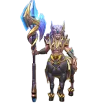
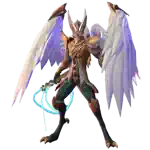
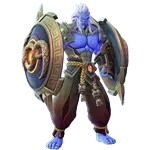
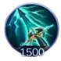
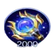
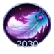
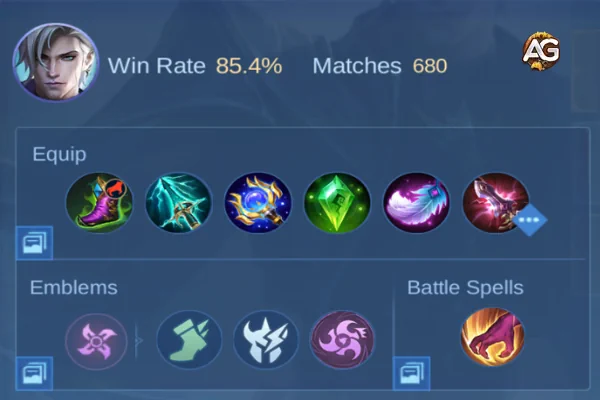
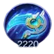

Visão Geral do Estilo de Jogo do Aamon
Aamon é conhecido por sua capacidade de desaparecer do campo de batalha, causar altos níveis de dano mágico explosivo e finalizar inimigos com pouca saúde. Apesar de suas forças, seu estilo de jogo é único e desafiador, exigindo um bom entendimento de sua passiva e habilidades.
Forças
- Alto dano explosivo
- Excelente mobilidade e invisibilidade
- Forte no meio e final do jogo
- Ótimo para eliminar inimigos isolados
Fraquezas
- Fraco no início do jogo
- Frágil e vulnerável ao controle de grupo
- Mecânicas difíceis
Entendendo as Habilidades e a Passiva de Aamon
Passiva - Armadura Invisível
Camuflagem, Buff
Descrição: Aamon entra no estado de Camuflagem cada vez que acerta um inimigo com uma habilidade, durante o qual ele não pode ser alvo, restaura 25 (+15% do Poder Mágico Total) mais 3% de sua vida perdida a cada 0,6s, e ganha 60% de Velocidade de Movimento extra que decai rapidamente em 3s. Ao sair do estado de Camuflagem, Aamon imediatamente redefine o tempo de recarga do seu Ataque Básico e melhora seus Ataques Básicos nos próximos 3s. Cada Ataque Básico aprimorado causa 70 (+100% do Ataque Físico Total) (+115% do Poder Mágico Total) de Dano Mágico e reduz o tempo de recarga das habilidades de Aamon em 0,5s. O dano do primeiro Ataque Básico aprimorado é aumentado para 120% se Aamon sair do estado de Camuflagem ativamente.
Análise: A passiva de Aamon é essencial para seu estilo de jogo. Toda vez que Aamon acerta um inimigo com uma habilidade, ele entra em estado de camuflagem, durante o qual não pode ser alvo. Nesse estado, sua velocidade de movimento aumenta em 60%, diminuindo gradualmente ao longo de 3,5 segundos. Além disso, Aamon regenera 25 HP a cada 0,6 segundos.
Habilidade 1 - Fragmentos da Alma
Dano, Buff, Tempo de Recarga: 7.0, Custo de Mana: 40, Proporção de Roubo de Vida: 25%
Descrição: Passiva: Aamon carrega sua armadura cada vez que lança uma habilidade ou acerta um inimigo com uma habilidade ou Ataque Básico aprimorado. Com 5 cargas, Aamon lança 5 fragmentos no alvo em seu próximo ataque, cada fragmento causando 50 (+15% do Poder Mágico Total) de Dano Mágico. Os fragmentos se espalham ao redor do alvo. Ativa: Aamon lança um fragmento em um inimigo próximo, causando 175 (+60% do Poder Mágico Total) de Dano Mágico.
Análise: Aamon lança um fragmento em um inimigo próximo, causando 175 de dano mágico. Esta habilidade não só ajuda a iniciar o combate, mas também ativa a passiva de Aamon, colocando-o em camuflagem. O fragmento também contribui para as cargas de sua armadura, e após coletar cinco cargas, o próximo ataque básico de Aamon libera seis fragmentos que causam dano mágico extra. Maximize esta habilidade primeiro, pois é sua principal fonte de dano.
Habilidade 2 - Fragmentos Mortais
Dano, Camuflagem, Tempo de Recarga: 13.0, Custo de Mana: 50, Proporção de Roubo de Vida: 25%
Descrição: Aamon lança um fragmento à frente, causando 120 (+50% do Poder Mágico Total) de Dano Mágico aos inimigos ao longo do caminho. O fragmento retornará a Aamon após um breve atraso e permitirá que ele entre no estado de Camuflagem. Se o fragmento acertar um inimigo que não seja minion, ele o reduzirá em 50% por 2s e retornará imediatamente a Aamon.
Análise: Aamon lança um fragmento à frente, que retorna a ele após um atraso. Se acertar um inimigo, retorna imediatamente e causa 120 de dano mágico, enquanto diminui a velocidade do inimigo em 50% por 2 segundos. Esta habilidade é versátil; você pode usá-la tanto para perseguir quanto para escapar. Entrar em camuflagem após acertar um inimigo permite que você se reposicione rapidamente.
Ultimate - Fragmentos Sem Fim
Explosão, Tempo de Recarga: 55.0, Custo de Mana: 150, Proporção de Roubo de Vida: 25%
Descrição: Aamon lança todos os fragmentos em um inimigo designado e o desacelera em 30% por 1,5s. Após um breve atraso, os fragmentos voarão novamente para a localização do inimigo, cada um causando 90 (+24% do Poder Mágico Total) - 150 (+40% do Poder Mágico Total) de Dano Mágico. O número de fragmentos aumenta com as cargas de armadura de Aamon e os fragmentos no chão (8-25). O dano causado aumenta com a perda de HP do alvo, sendo máximo quando o HP do alvo está abaixo de 30%. O mesmo alvo recebe menos dano de ataques subsequentes.
Análise: Aamon lança todos os seus fragmentos acumulados em um inimigo alvo, causando até 90 de dano mágico por fragmento. O dano escala com base em quantos fragmentos Aamon acumulou e aumenta com a falta de HP do alvo. Quanto mais fragmentos, maior a explosão. Sempre use esta habilidade como finalizadora quando seu alvo estiver com pouca saúde para maximizar o dano.
Combos e Execução de Aamon
Combo Básico 1:
- Habilidade 2 (Fragmentos Mortais)
- Ataque Básico
- Habilidade 1 (Fragmentos da Alma)
- Ataque Básico
- Ultimate (Fragmentos Sem Fim)
Combo Avançado 2:
- Habilidade 2 (Fragmentos Mortais)
- Habilidade 1 (Fragmentos da Alma)
- Ataque Básico
- Ultimate (Fragmentos Sem Fim)
Como Counterar Aamon em Mobile Legends
Counters de Aamon
| Counters | O que acontece |
|---|---|
|
Rafaela |
Os desaceleramentos e atordoamentos de Rafaela impedem Aamon de escapar ou se envolver de forma eficaz, revelando-o e interrompendo sua explosão. |
|
Alice |
O teletransporte e a sustentação de Alice permitem que ela sobreviva à explosão de Aamon, e suas habilidades de controle podem mantê-lo sob controle durante as lutas. |
|
 Hylos |
A durabilidade e os atordoamentos em área de Hylos tornam difícil para Aamon reposicionar-se, permitindo que a equipe o foque. |
|
Carmilla |
A habilidade de Carmilla de vincular e desabilitar inimigos impede Aamon de isolar seus alvos, prejudicando sua capacidade de eliminar alvos frágeis. |
|
Saber |
A supressão de alvo único de Saber pode neutralizar Aamon antes que ele possa entrar em modo furtivo ou causar dano significativo. |
|
 Kaja |
O Julgamento Divino de Kaja pode arrastar Aamon para fora de posição, tornando-o vulnerável e impedindo-o de utilizar o modo furtivo de forma eficaz. |
|
 Baxia |
Redução de dano, anti-cura e poder de perseguição de Baxia perturbam a explosão e furtividade de Aamon, dificultando sua sobrevivência ou reposicionamento. |
Técnica Eficaz Contra Aamon
Ao jogar contra Aamon, construir itens de defesa mágica pode reduzir seu potencial de explosão:
- Armadura Radiante: Reduz o impacto do dano mágico contínuo de Aamon, permitindo que você absorva seus ataques de fragmentos.
- Escudo de Atena: Fornece um escudo e reduz o dano mágico, absorvendo uma parte significativa da explosão de Aamon.
Builds Recomendadas para Aamon
As builds de Aamon focam em amplificar seu poder mágico e penetração para garantir que seu dano explosivo permaneça letal durante todo o jogo.
Build Global Sustentada de DPS
Essa build oferece DPS consistente, regeneração de mana e a capacidade de permanecer móvel durante as lutas.

Botas Resistentes
Análise: Defesa mágica, redução de CC e lentidão.

Perfuração Celestial
Análise: Ataque adaptativo e velocidade de movimento. Melhor para finalizar inimigos.

Cajado Genial
Análise: Reduz a defesa mágica do inimigo.

Cristal Mágico
Análise: Grande aumento no poder mágico.

Pluma Celestial
Análise: Aumenta a velocidade de ataque e o dano mágico.

Glaive Divina
Análise: Alta penetração mágica.

Build de Explosão
A build de explosão foca em causar o máximo de dano possível em um curto espaço de tempo, perfeita para assassinar heróis frágeis.

Foice Estelarium
Análise: Regeneração de mana e redução de tempo de recarga.

Botas Arcana
Análise: Penetração mágica.
Cajado Genial
Análise: Reduz a defesa mágica do inimigo.

Varinha Brilhante
Análise: Causa dano por queimadura e redução de cura.
Cristal Mágico
Análise: Grande aumento no poder mágico.
Glaive Divina
Análise: Alta penetração mágica.
Emblemas e Talentos
O emblema de Mago é a melhor escolha para Aamon devido à sua versatilidade em aumentar o poder mágico e a penetração.
- Talento 1: Veloz - Fornece 10% de velocidade de ataque bônus, permitindo ataques básicos aprimorados mais rápidos.
- Talento 2: Caçador Experiente - Aumenta o dano contra o Lorde e a Tartaruga em 15%, facilitando o controle de objetivos.
- Talento Principal: Ignição Letal - Potencializa o dano explosivo de Aamon, sinergizando com seu ultimate para eliminações mais rápidas.
Dicas de Gameplay para Aamon
Início de Jogo: Foque em farmar e atingir o nível 4 rapidamente. Desbloqueie sua primeira habilidade para ajudar a limpar a selva e priorize ganks na rota do ouro. Se você começar mal, continue farmando e evite lutas desnecessárias.
Meio de Jogo: É aqui que Aamon começa a brilhar. Foque em eliminar os heróis da retaguarda inimiga, como o Mago e o Atirador, usando paciência e posicionamento para flanqueá-los nas lutas em equipe.
Final de Jogo: Aamon pode causar um dano massivo, mas tenha cautela ao se envolver, pois os inimigos vão focar em você. Foque em eliminar a retaguarda, garantir objetivos e se posicionar cuidadosamente.
Conclusão do Guia de Aamon
Dominar Aamon em Mobile Legends exige entender suas mecânicas de camuflagem, encadear habilidades com ataques básicos e executar combos no momento certo. Com a build e a estratégia de gameplay corretas, Aamon pode dominar o campo de batalha, eliminando inimigos com alto dano explosivo e mobilidade. Siga este guia, e você estará mais perto de se tornar um assassino imbatível com Aamon.

 Guia de Dyrroth MLBB
Guia de Dyrroth MLBB